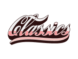

Based in Sydney
Design that connects through story and meaning
I'm Pei-Shan, a UI/UX designer based in Sydney, shaped by storytelling and human connection, turning inspiration from people into thoughtful, considered product experiences.
Selected work
●
Classics for a cause
Turning Passion into Access and Classics into Reality
●
Promedicine
Transforming Healthcare Access into Real-Time Connection

●
School of Property
A Site Worth the Brand Behind It
About
Pei-Shan is a UI/UX designer based in Sydney. She focuses on bringing clarity to complex systems and turning them into intuitive product experiences.
Guided by storytelling and human insight, she transforms inspiration from people into intentional, well-crafted design. From the fashion industry in Taiwan to UI/UX in Sydney — resilience and curiosity define her approach.
